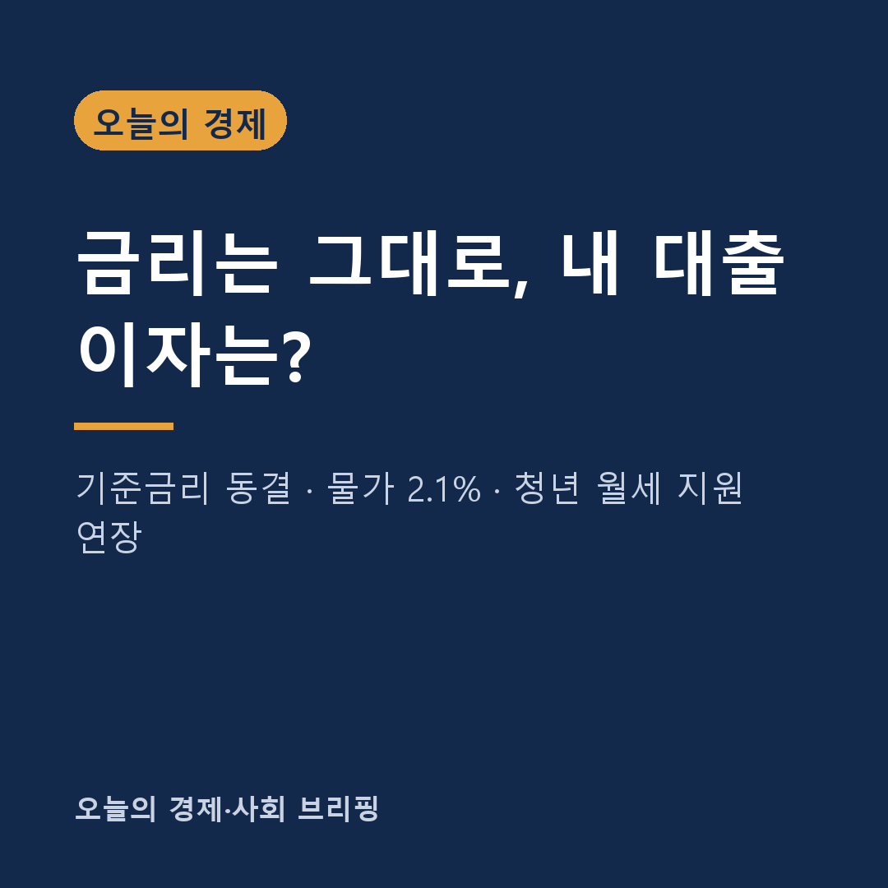
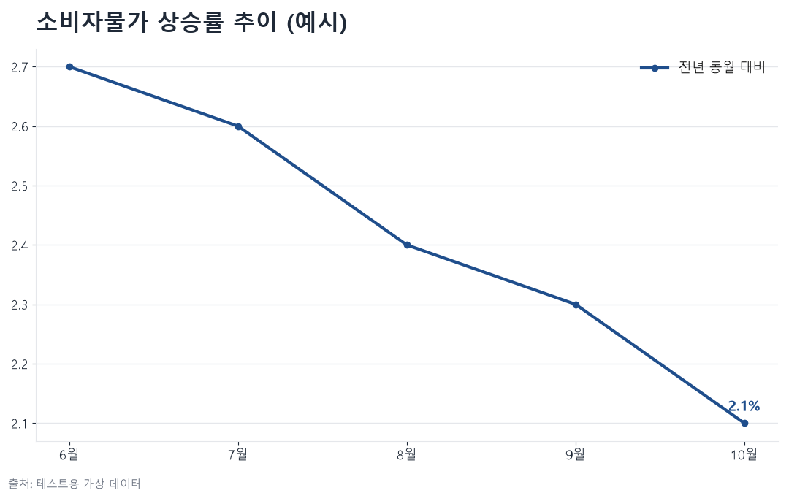

sample 발행 키트 · 이 페이지는 검색에 노출되지 않습니다.
제목
태그
본문 (그림·표 포함)

※ 형식 참고용 예시이며 내용은 테스트용 가상 데이터입니다.
오늘 아침 가장 많이 받은 질문은 하나였어요. "금리 안 내렸다는데, 그럼 제 대출은요?"
결론부터 말씀드리면, 변동금리로 돈을 빌린 분들은 당분간 지금과 비슷한 이자를 내게 될 가능성이 높습니다. 한국은행이 정책금리를 2.50%에서 손대지 않았거든요. 물가는 많이 잡혔지만 가계 빚이 늘어나는 속도가 아직 걱정된다는 게 이유입니다.
▶ 갈아타기를 미뤄 왔다면
"조금만 기다리면 금리가 내려가겠지" 하며 대출 갈아타기를 미뤄 온 분이라면, 지금 조건과 중도상환수수료를 한 번 계산해 보는 게 좋겠습니다. 인하 시점이 생각보다 늦어질 수 있기 때문이에요. 다음 회의 전에 나오는 가계대출 통계가 꽤 중요한 힌트가 될 겁니다.
▶ 물가 2%대인데 왜 장보기는 그대로 비쌀까
10월 물가 상승률은 2.1%였습니다. 숫자만 보면 안정적이죠. 그런데 채소값은 내려도 점심값, 미용실, 배달비 같은 서비스 가격은 계속 오르고 있어요. 그래서 통계와 체감이 따로 노는 겁니다. 카페나 식당을 운영하시는 분들도 재료비보다 인건비와 임대료 부담이 더 크다고 말씀하시는 이유이기도 합니다.

▶ 놓치면 아까운 지원 두 가지
첫째, 청년 월세 특별지원 접수가 한 달 연장됐습니다. 무주택이고 소득 기준에 들어가는 청년이라면 다시 기회가 생긴 셈이에요. 부모님 소득 기준도 함께 보니 사는 지역 지자체 안내를 꼭 확인하세요.
둘째, 겨울 난방비를 돕는 에너지바우처 대상이 넓어졌습니다. 작년에 대상이 아니었더라도 올해는 해당될 수 있으니 주민센터에 문의해 보시길 권합니다.
놓치면 아까운 지원 정리 (예시)
| 지원 | 대상 | 확인할 곳 |
|---|---|---|
| 청년 월세 특별지원 | 무주택 청년(소득 기준) | 지자체 안내 |
| 에너지바우처 | 대상 확대 | 주민센터 |
출처: 테스트용 가상 데이터
▶ 사장님들은 이것도 체크
내년 최저임금이 확정 고시됐습니다. 직원을 두고 계시다면 바뀐 금액을 알리고 근로계약서를 미리 정리해 두는 게 안전합니다.
▶ 환율도 잠깐 볼까요
원·달러 환율이 1,380원대에서 마감했습니다. 해외 직구나 여행 계획이 있다면 결제 시점을 나눠 보는 것도 방법이에요. 수입 원자재를 쓰는 가게라면 다음 달 납품 단가가 오를 수 있다는 점도 미리 염두에 두시면 좋겠습니다.
▶ 한 줄 정리
금리는 멈췄고, 물가는 숫자보다 체감이 더 무겁고, 대신 받을 수 있는 지원은 조금 넓어졌습니다. 이자 계산 한 번, 지원 신청 자격 확인 한 번. 이번 주에 이 두 가지만 챙겨도 충분합니다.
오늘은 여기까지입니다. 궁금한 점은 댓글로 남겨 주세요.
출처 (본문 맨 아래에 붙여넣기 권장)
- 테스트, 한국은행 기준금리 동결, https://news.example.com/economy/1001 - 테스트, 10월 소비자물가, https://news.example.com/economy/1002 - 테스트, 청년 월세 지원 연장, https://news.example.com/society/2002 - 테스트, 난방비 지원 확대, https://news.example.com/society/2003 - 테스트, 최저임금 고시, https://news.example.com/society/2001